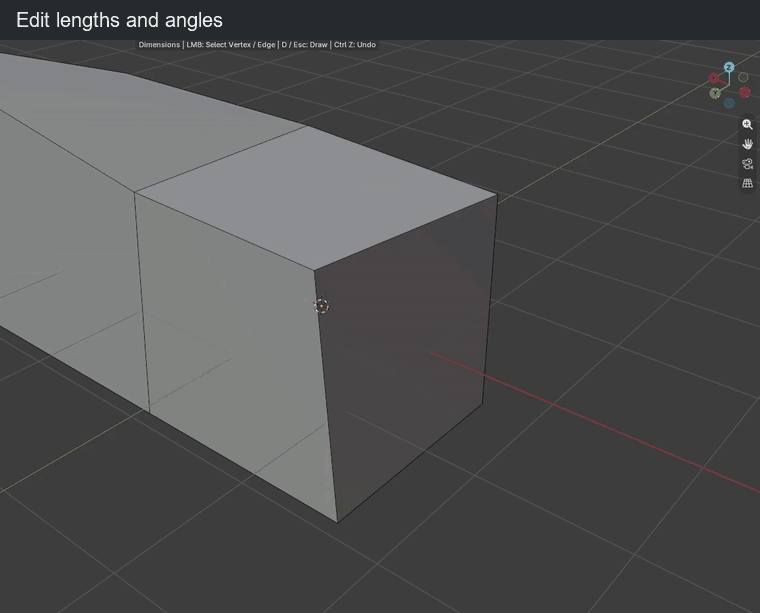

Dimensions
Click Dimensions in N > BagaCAD, or press D while drawing, then select a vertex or an edge. Near an endpoint, the vertex takes priority. A single selected or active element may be picked automatically.
A selected vertex shows its incident edge lengths and useful angles. A selected edge shows its length, nearby parallel distances and angles. Lengths follow the scene units; angles use degrees.
Change a value

| Key or gesture | Action |
|---|---|
| Click a vertex or edge | Select the element to measure and edit |
| Click a value | Highlight it in blue and type a replacement |
| Drag a value left / right | Decrease / increase it |
| Release the drag | Confirm the change |
| Ctrl while dragging | Use the configured length or angle increments |
| Shift while dragging | Adjust ten times more finely |
| Enter / click during input | Confirm typed input |
| Esc / right click during input | Cancel the edit |
| Ctrl + A during input | Select the whole value |
| Ctrl + V during input | Paste a value |
| Backspace during input | Delete a character |
Lengths accept units such as mm, cm, m, ft and in. Angles accept values from −360° to 360°. Typed values do not use drag rounding.
Vertex anchoring
A selected vertex starts anchored. Click its support icon or press Tab outside input to toggle anchoring.
- Anchored: the selected vertex stays fixed; its neighbours adapt.
- Free: only the selected vertex moves; the opposite endpoints remain fixed. Shared faces follow without detaching.
With no other length locked, a length edit moves along that edge. With locked lengths, the vertex can change direction while free angles adapt. The solver chooses the nearest position satisfying those lengths. For example, at a three-edge corner, lock two lengths and edit the third if a geometric solution exists. If the locks conflict, the edit is refused and the preview restored.
Readable angles
The display hides composite angles already described by smaller coplanar sectors and redundant directions. Equal angles in different useful sectors can remain; a cube corner keeps its three independent right angles. Locked and currently edited angles remain visible.
Arc sizes follow the visible edges and zoom. Labels sit near their arcs with staggered radii to reduce overlap. This changes the display, not the stored constraints.
Edge fixed end and locks
| Key or gesture | Action |
|---|---|
| Tab outside input / click the support icon | Switch the fixed endpoint of the selected edge |
| Hover a value | Reveal its padlock |
| Click the padlock | Lock / unlock that dimension |
A length edit moves the free endpoint along the edge. A parallel distance edit translates the edge. Angle edits try to slide connected endpoints along neighboring directions, changing the edited length when needed to limit distortion.
Locked values are kept while neighboring geometry adjusts. If constraints conflict, cancel or unlock a value. Locks last only while Dimensions is active; leaving the mode clears them.
Undo and return
| Key or gesture | Action |
|---|---|
| Ctrl + Z during input or a drag | Cancel the current preview |
| Ctrl + Z outside input | Undo a validated change |
| Backspace outside input | Deselect the element |
| Backspace during a drag | Cancel the preview |
| Right click outside input | Deselect the element |
| D / Esc outside input | Return to drawing |